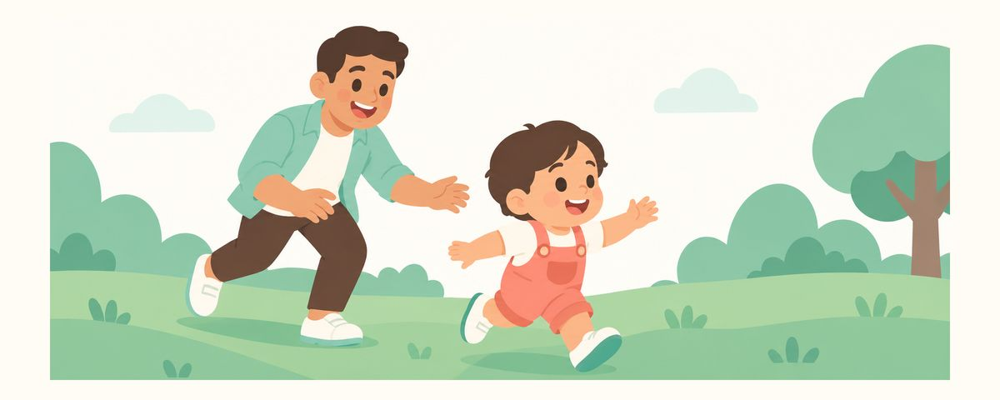

아이가 넘어져 유치를 다쳤을 때: 빠지고 흔들린 앞니 응급 대처
넘어져 유치를 다치면 대개 지켜보지만 치과 확인은 꼭 필요해요. 빠진 유치를 다시 심지 않는 이유, 상황별 대처, 응급실이 먼저인 신호와 나중에 살필 변화를 정리했어요.
한눈에 보기
- 완전히 빠진 유치는 다시 심지 않아요
- 흔들리거나 들어갔다면 되도록 빨리 치과로
- 의식 잃음·구토·심한 졸림은 응급실이 먼저
걷고 뛰기 시작하면 넘어져 입을 부딪치는 일이 흔해요. 피가 나고 아이가 울면 부모도 놀라서 무엇부터 해야 할지 막막하죠. 유치를 다쳤을 때 차분하게 할 일과, 바로 치과나 응급실에 가야 하는 신호를 정리했어요.
유치를 다치면 어떤 일이 생길까요
걸음마를 시작해 뛰어다니는 시기에는 앞으로 넘어지면서 위 앞니를 다치는 일이 많아요. 다치는 모양은 여러 가지예요. 이가 흔들리거나, 잇몸 속으로 들어가거나, 앞뒤로 밀려 위치가 바뀌거나, 아예 빠지기도 해요. 이가 깨지거나 입술과 잇몸이 찢어지기도 하고요.
유치 외상은 대부분 지켜보면서 자연스럽게 낫기를 기다려요. 그래도 치과 확인이 꼭 필요한 이유가 있어요. 유치 바로 아래에서 영구치 싹이 자라고 있기 때문이에요. 겉으로 괜찮아 보여도 뿌리나 그 아래가 다쳤는지는 치과에서 봐야 알 수 있어요.
다친 뒤 몇 주 안에 이가 회색이나 노란색, 분홍빛으로 변할 수 있어요. 놀라기 쉽지만 변색만으로 바로 치료하지는 않아요. 몇 주에서 몇 달에 걸쳐 옅어지며 원래 색으로 돌아오기도 해요. 다만 경과는 지켜봐야 하니 검진 때마다 보여 주세요.
이럴 때 부모가 흔히 헷갈리는 것들이 있어요.
- "피가 멎고 잘 노니까 괜찮다": 겉으로 멀쩡해 보여도 아래 영구치 싹 쪽은 알 수 없어요. 당일이나 다음 날 치과에서 확인받아요.
- "빠진 이는 우유에 담가 가면 다시 심어 준다": 이건 영구치 이야기예요. 유치는 다시 심지 않아요.
- "이가 회색이 되면 곧 빠진다": 변색만으로 이가 빠지거나 바로 치료하는 건 아니에요. 지켜보면서 다른 신호가 있는지 살펴요.
다쳤을 때는 이렇게 해 주세요
- 먼저 아이 상태를 살펴요. 의식을 잃었거나, 토하거나, 심하게 졸려 하면 이보다 머리 부상이 먼저예요. 바로 응급실에 가요.
- 피가 나면 눌러 줘요. 깨끗한 거즈나 수건으로 피 나는 곳을 지그시 눌러 줘요. 입안은 피가 많아 보이지만 대개 누르면 멎어요.
- 입안을 살펴요. 아이가 조금 진정되면 윗입술을 살짝 들어 앞니와 잇몸을 봐요. 이가 흔들리는지, 들어갔는지, 위치가 바뀌었는지, 빠졌는지 확인해요.
- 빠진 이는 찾아서 가져가요. 완전히 빠진 유치는 다시 심지 않아요. 하지만 정말 다 빠졌는지, 잇몸 속으로 들어간 건 아닌지 확인하려면 빠진 이를 치과에 가져가는 게 좋아요. 이를 찾지 못했다면 그 사실도 꼭 알려 주세요.
- 흔들리거나 들어갔거나 밀렸다면 되도록 빨리 치과에 가요. 그 밖의 외상도 당일이나 다음 날 치과에서 확인받으세요.
- 며칠은 부드럽게 관리해요. 부드러운 음식을 주고, 다친 곳도 부드러운 칫솔로 살살 닦아요. 다친 곳을 깨끗하게 지켜 주는 게 낫는 데 도움이 돼요.
이가 색이 변했다면 날짜를 적고 사진을 남겨 두면 좋아요. 치과에서 경과를 볼 때 도움이 돼요.
자주 묻는 질문
빠진 유치를 다시 넣어 줄 수는 없나요?
유치는 다시 심지 않아요. 다시 심는 과정에서 바로 아래 영구치 싹을 다칠 수 있기 때문이에요. 빠진 이는 버리지 말고 치과에 가져가 확인받으세요.
이가 잇몸 속으로 들어갔어요. 어떻게 하죠?
되도록 빨리 치과에 가세요. 들어간 정도와 방향을 확인해 지켜볼지 다른 처치가 필요한지 정해요. 집에서 이를 당기거나 눌러 보지 않아요.
다친 앞니가 회색으로 변했어요. 신경치료를 해야 하나요?
변색만으로 바로 신경치료를 하지는 않아요. 시간이 지나며 옅어지기도 해요. 다만 잇몸에 고름집이 생기거나 붓거나 아파하면 다시 치과에 가세요.
나중에 영구치에도 문제가 생길 수 있나요?
유치 바로 아래에 영구치 싹이 있어서 영향이 있는지 살펴야 해요. 영구치가 나올 때가 되어야 알 수 있는 경우도 있으니, 정기검진 때 다쳤던 이를 계속 보여 주세요.
이럴 땐 바로 진료를 받으세요
- 의식을 잃었거나, 토하거나, 심하게 졸려 할 때(응급실이 먼저예요)
- 이가 흔들리거나, 잇몸 속으로 들어갔거나, 위치가 바뀌었을 때
- 이가 완전히 빠졌거나, 빠진 이를 찾지 못했을 때
- 피가 눌러도 잘 멎지 않을 때
- 시간이 지나 잇몸에 고름집이 생기거나 이가 점점 어두워질 때
시기마다 알림으로 받아 보세요
치아달력 앱에 생일(또는 출산 예정일)을 넣으면 이 글들이 필요한 때에 맞춰 알림으로 와요. 가입 없이 무료로 쓸 수 있어요.
출처
이 앱의 정보는 일반적인 교육 목적이며 진료를 대체하지 않습니다. 아이의 상태에 대해서는 치과의사와 상담하세요.